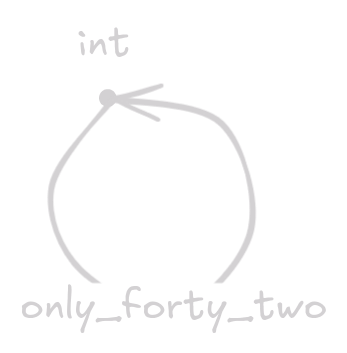
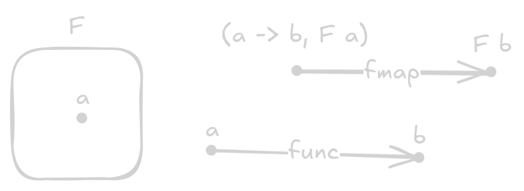

Repeat after me:
A monad is NOT a burrito.
A monad is NOT a taco.
A monad is NOT a wrapper.
Achtung!
This post will talk about Category Theory. As complex and confusing as Category Theory is, I don’t think most of the things mentioned here about Category Theory are that hard to understand. In any case I would like to remove some of the gate keeping in the part of Category Theory that intersects with the field of Computer Science. Although some of these concepts are not entirely necessary for industry work I do find understanding some of this can be a great help in tackling and thinking about problems differently.
Introduction
Before reading I do always like specifying what exactly you’re about to get yourself into. Here are the sections
- A functor is a burrito
- A monad is a functor
- What is a monad?
- Why do I care?
- Why should you care?
As you might have noticed these sections are also kind of a TLDR. Additionally, since we will talk about Category Theory, a category is just a collection of objects with morphisms between them. Graphically, we can draw this as arrows between dots. For us, computer scientists, the “objects” will always be the types in our programming language of our choice, and the “morphisms” are just functions between those types. We don’t really care about other categories unless you go very deep into Category Theory, which we will not do. An example of this would be:
# Python
def is_even(x: int) -> bool:
if x % 2 == 0:
return True
else
return False
In this case, we have a function that takes an int and returns a
bool.
In our category we will see this as an arrow being drawn from the dot that says
int to the dot that says bool and that arrow’s name will be is_even.

Another example could be:
// C
int only_forty_two(int x) {
return 42;
}
In which case our category would look like:

A functor is a burrito
Don’t worry I will explain what a functor is in a moment. I want you to keep in the back of your mind the idea of a burrito: a tortilla filled with deliciousness inside.
In Category Theory, we define a “functor” as a mapping between categories.
But remember, since we’re computer scientists, we only care about the category
of types and functions.
That means a functor for us would go from the category of functions and types
back towards the category of functions and types.
It would look exactly like the second example in the introduction, where
only_forty_two is our functor, and int is the category of types and
functions.
But what does it mean to “go from the category of types back to the category of types”??
Let’s just assume we already have a functor that does this and let’s call it
F.
How does F look like and what does it do?
Well this functor F, in order to actually be a functor, needs to take
objects, types in our case, and map them to other objects, also types in this
case.
Additionally, it needs to take a function between those types and map it to
another function, but we will see this later.
Let’s focus on the first part, mapping types to other types.
Where have we seen this before? …
A function that takes in a type as a parameter and outputs a type.
This seems very similar to:
// C++
std::vector<T>
# Python
list[T]
// Rust
Vec<T>
In this case, std::vector, list and Vec take in a type T and output a
new type, std::vector<T>, list[T] and Vec[T] respectively.
This means that a functor must be a wrapper around a type…
A burrito if you will.
So every time you think about wrapping some type, remember, this is a functor.
Some extra notation, that will be useful in a moment, is to call a type a that
gets wrapped with our example functor F as F a.
Secondly, our functor F has to take a function func between two types a,
b and map it to a function called F func that goes between F a and F b.
Since we are defining a new “mapping thingamabob” that has to happen, this means
we need to define a new function.
Let’s call that function fmap for no particular reason!
Our setup will now look like the following:
- a function:
fmapthat takes a(a -> b, F a)and produces anF b - a function:
functhat takes anaand produces ab. - a type:
F a.
Our setup looks like this:

The idea behind fmap is that it puts the input side of func inside the F
box that has an a in it, func will transform that a into a b inside that
F box, and that is what we want fmap to do.
Kind of like this:

Functors are very common in category theory. They might have a scary name but they are actually very simple building blocks used for other more complex category theory things. For us computer scientists, they are just burritos!
A monad is a functor
For this we will have to tackle two concepts:
- endofunctor
- monoid
Both are very simple, don’t worry. An endofunctor is a functor that goes from the same category to itself. For us computer scientists, all our functors are endofunctors. It would be impossible to create a functor that is not an endofunctor in our situation. Additionally, a monoid is a category that has 1 object.
I would like to spend a moment to develop some intuition on monoids. Since a monoid is a category that has only 1 object, all of the morphisms come and go from the same, singular, object. In our category of types and functions we can create a monoid. The second example of the introduction is a monoid! Additionally, I want you to think what would happen if we kept adding functions to that monoid. We would have a single type with a huge set of functions we can compose! The intuition in this case is: a monoid is a way to think about composing functions.
What is a Monad?
Let’s see what Wikipedia defines a “monad” as:
In concise terms, a monad is a monoid in the category of endofunctors of some fixed category.
No need to take this definition apart piece by piece, it is not necessary.
The idea behind the monad is that we have a way to construct a special “monoid”.
(Remember what I said about composition and monoids.)
The single object in this category will be our functor F, which just so
happens to be an endofunctor.
We have a special morphism in this monoid that will ensure that we can compose
types produced by this functor.
We will call this function >>= or bind for no particular reason!
This function will take some type F a and a function that produces another
type a -> F b, and will produce a type F b.
In this case, a monad’s special ability is just to make sure you can compose different functions with this functor.
Let’s do an example.
We need a wrapper, let’s use Option from Rust as our functor!
We then have:
fn bind<A, B>(opt: Option<A>, func: fn(A) -> Option<B>) -> Option<B> {
match opt {
Some(a) => func(a),
None => None
}
}
This makes more sense once we start using bind to compose lots of these
func’s together!
let _ = bind(bind(bind(bind(option, to_int), to_char), to_string), to_float);
This looks prettier in Haskell:
let _ = option >>= to_int >>= to_char >>= to_string >>= to_float
Why do I care?
I see people say:
but a monad is a burrito
way too much online… I think that there is a far greater intuition that can be achieved behind thinking about monads as just composition, instead of as a “burrito”. Additionally, I think it would be interesting to see people use “functor” as common terminology when they’re just referring to a type constructor/wrapper or whatever you want to call that.
Why should you care?
idk. but I hope this was cool to read about. Anyways, here’s a JSON parser using lots of these concepts in just 100 lines of code: